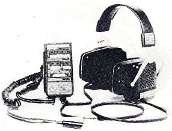
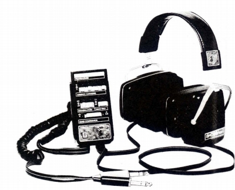
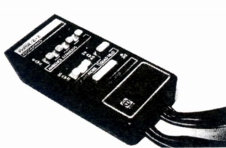

Phase/2+2


■価格 50,000円
■型式 4/2chダイナミック型
■振動板 前 50�oデシライト 後 38�oハイベロシティエレメント
■インピーダンス 前 310Ω 後 263Ω
■再生周波数帯域 前 20-20,000Hz 後 15-15,000Hz
■許容入力
■感度 100ｄB-SPL/前 5.4Ｖ正弦波 後 9.5Ｖ正弦波
■コード 3.75m（本体→コントローラ
1m/2.75mカールコード）
■重量 492g（コード含まず）
■発売 1977年頃
■販売終了 1979年頃
■備考
4/2ch切替スイッチ、プログラマー付き
通常前後同一のユニットであるのに対し、全く別のユニットを組み合わせている
クォドラホン・コントローラで127通りの聴取空間を楽しめる
